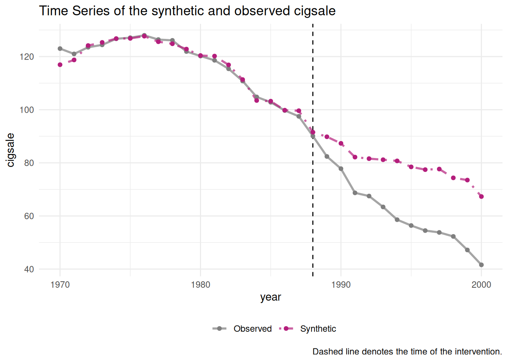
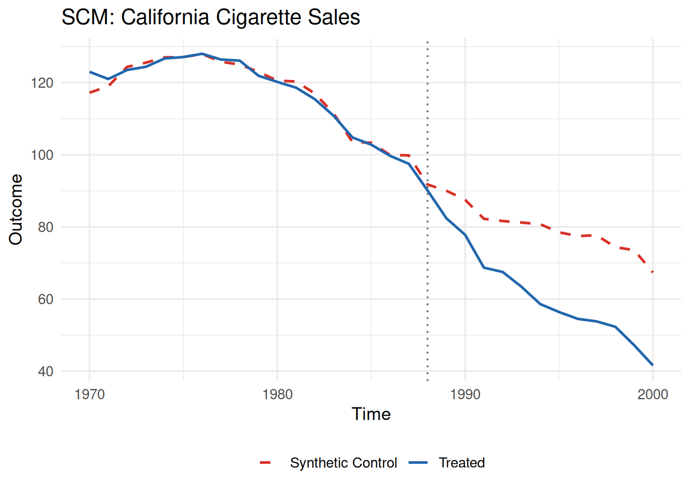
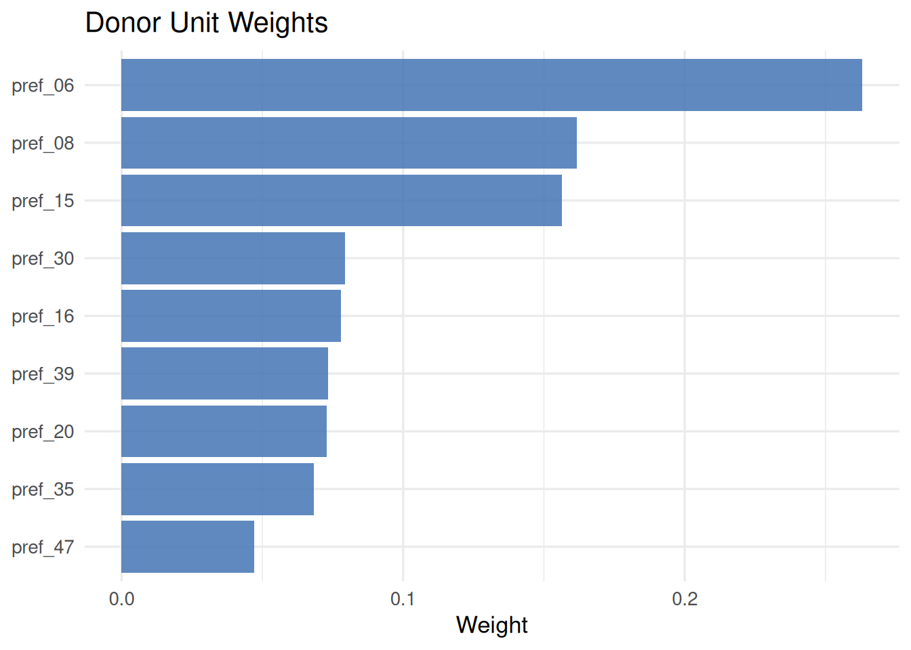
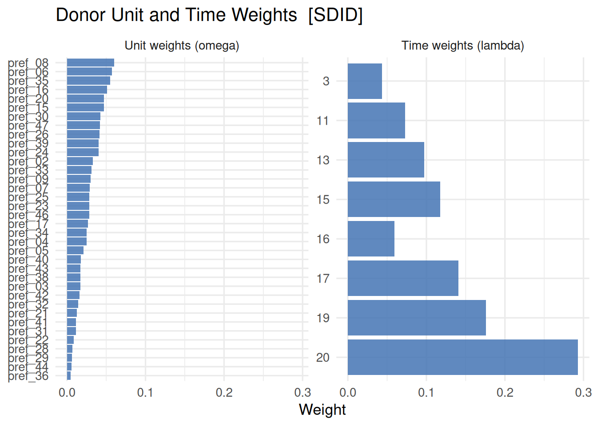
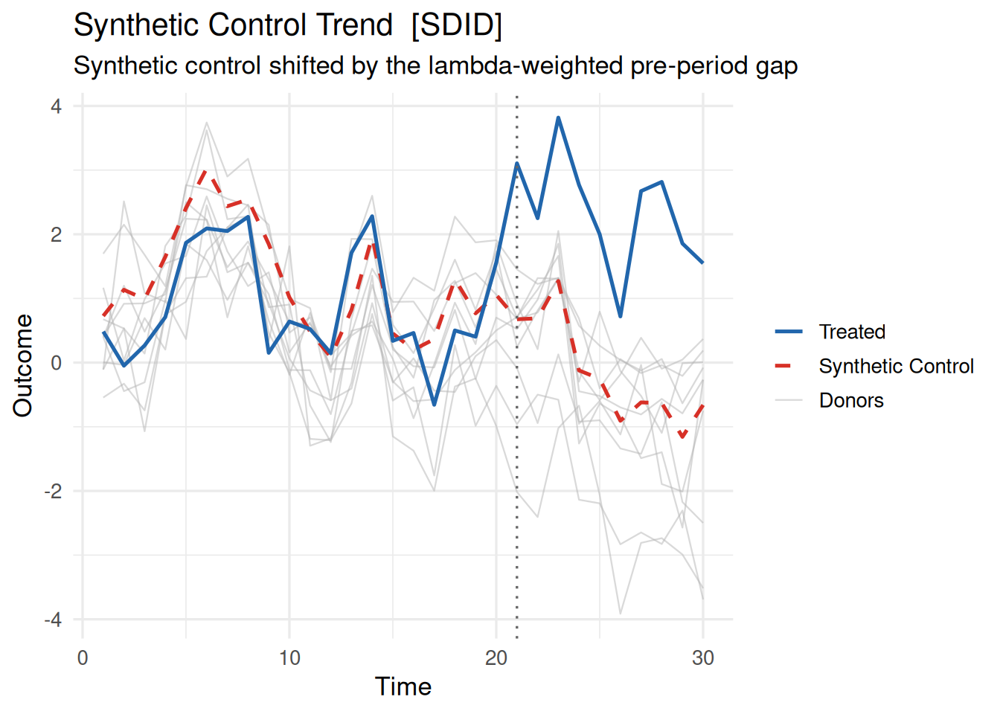
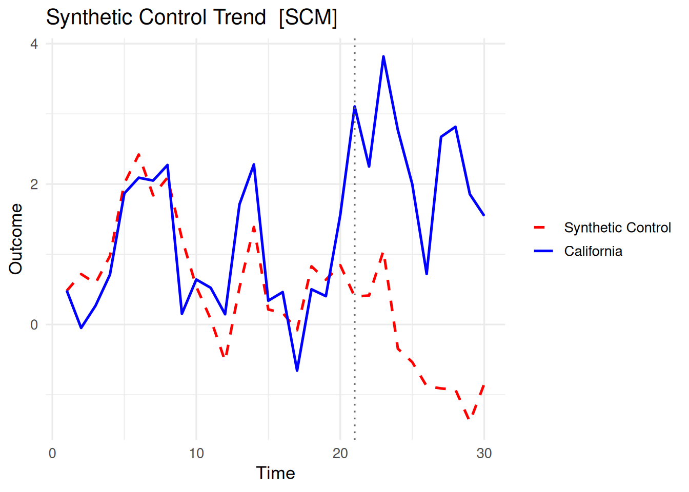
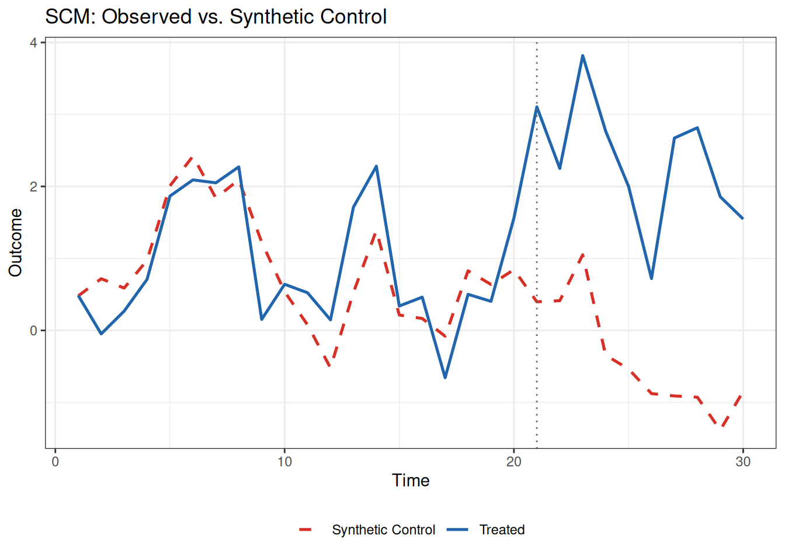
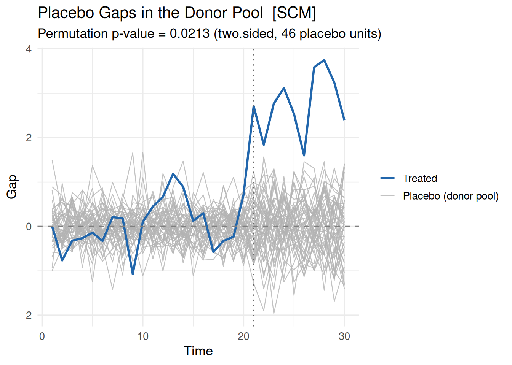

library(coresynth)


Note
本パッケージでは複数の手法に対応していますが、合成コントロール法に絞って使い方を説明した記事を作成しましたので、手っ取り早く確認されたい場合はこちらをご覧ください。
はじめに
本ページでは、私が開発した合成コントロール法（SCM）とその関連手法を統一インターフェースで提供するパッケージ、coresynthについて説明します。関数リファレンスや変更履歴など詳細はpkgdownのページも参考にしてください。
coresynthの最大の特徴はパフォーマンスです。計算上のボトルネックをすべてC++（RcppArmadillo）で実装しており、純Rの代替実装と比べてかなり高速化しています。
このパッケージでは、推定だけでなく可視化・推論・ロバストネス確認・JSON出力まで一連の分析フローを同じインターフェースで実行できます。たとえばConformal推論（conformal_inference()）を使えば、scm/sdid/gsc/mc/siのシャープフィットに対してp値と信頼区間を計算できます。
Noteご意見待ってます
実装・挙動に関するフィードバックや機能リクエストは、ページ下のコメントかGitHubのIssuesまでお寄せください。
このパッケージでできること
- 6つの推定量（
scm/sdid/gsc/mc/tasc/si）1をscm_fit()で統一的に推定 - SharpだけでなくStaggered Adoption（およびSIではマルチアーム）にも対応
plot()でトレンド差・ギャップ・ウェイト、プラセボテストを共通フォーマットで可視化- 手法ごとの推論関数に加え、Conformal推論で仮定依存の小さい推論を実行
export_json()で結果をJSONに保存し、再現可能な分析フローを構築
coresynthが対応する推定量は以下の6つです。
| 推定量 | method |
参考文献 |
|---|---|---|
| Synthetic Control Method | "scm" |
Abadie et al. (2010) |
| Synthetic Difference-in-Differences | "sdid" |
Arkhangelsky et al. (2021) |
| Generalised Synthetic Control | "gsc" |
Xu (2017) |
| Matrix Completion | "mc" |
Athey et al. (2021) |
| Time-Aware Synthetic Control | "tasc" |
Rho et al. (2026) |
| Synthetic Interventions | "si" |
Agarwal et al. (2024) |
また、各推定量に対して複数の推論手法が利用できます。
| 推論手法 | 対応推定量 | 関数 |
|---|---|---|
| プラセボテスト（Sharp） | scm |
mspe_ratio_pval() |
| 重み付き乗数（Wild）Bootstrap（Staggered） | scm |
scm_inference() |
| プラセボ / Bootstrap / Jackknife | sdid |
sdid_inference() |
| パラメトリックBootstrap | gsc |
gsc_boot() |
| ノンパラメトリックBootstrap / Jackknife | gsc |
gsc_inference() |
| Bootstrap / Jackknife | si |
si_inference() |
| Conformal推論（CWZ 2021） | scm, sdid, gsc, mc, si |
conformal_inference() |
インストール
CRANに公開されましたので、以下のコマンドでインストールできます。
pak::pak("coresynth")
# 開発版をインストールする場合
pak::pak("yo5uke/coresynth")準備
パッケージを読み込みます。
本ページで使用するデータを生成します。47都道府県に相当するバランスパネル（ユニット数47、期間数30、真のATT = 2.5）を3因子モデルで生成します。
set.seed(2024)
N <- 47 # ユニット数（都道府県数相当）
TT <- 30 # 期間数（年）
T_pre <- 20 # 処置前期間
r <- 3 # 潜在因子数
# 3因子モデルによるパネル生成
F_t <- matrix(0, TT, r)
for (j in seq_len(r)) {
F_t[, j] <- cumsum(rnorm(TT, 0, 0.4))
}
L_i <- matrix(abs(rnorm(N * r, 1, 0.3)), N, r)
Y <- L_i %*% t(F_t) + matrix(rnorm(N * TT, 0, 0.5), N, TT)
dat <- expand.grid(
time = seq_len(TT),
id = paste0("pref_", sprintf("%02d", seq_len(N)))
)
dat <- dat[order(dat$id, dat$time), ]
true_att <- 2.5
dat$y <- as.vector(t(Y))
dat$d <- as.integer(dat$id == "pref_01" & dat$time > T_pre)
dat$y[dat$d == 1] <- dat$y[dat$d == 1] + true_att # 真のATT = 2.5idがユニット識別変数（pref_01〜pref_47）、timeが時間変数（1〜30）、yが結果変数、dが処置変数（処置ユニットpref_01が21期目以降に処置）です。ここでは先頭5行のみ表示しているのでdはすべて0になっています。pref_01以外の46ユニットがドナープールとなります。
| time | id | y | d |
|---|---|---|---|
| 1 | pref_01 | 0.48436018 | 0 |
| 2 | pref_01 | -0.04823072 | 0 |
| 3 | pref_01 | 0.26755165 | 0 |
| 4 | pref_01 | 0.70935689 | 0 |
| 5 | pref_01 | 1.86655560 | 0 |
scm_fit()
scm_fit()はすべての手法への統一エントリーポイントです。フォーミュラは 結果変数 ~ 処置変数 | ユニットID + 時間ID の形式で指定します。重要な点として、処置変数はあらかじめ作成が必要です。「処置ユニットかつ処置時点以降は1、それ以外は0」となるように処置変数を設定してください。
scm_fit(
formula,
data,
method = c("scm", "sdid", "gsc", "mc", "tasc", "si"),
predictors = NULL,
covariates = NULL,
v_selection = c("insample", "oos"),
donor_mspe_threshold = Inf,
lambda_pen = NULL,
v_optim = c("coord_descent", "auto", "bfgs"),
nu = NULL,
fixedeff = FALSE,
...
)| 引数 | 説明 |
|---|---|
formula |
y ~ d | unit + time 形式のFormulaオブジェクト |
data |
ロング形式のデータフレーム（1行 = 1ユニット×1時点） |
method |
推定手法の選択（"scm", "sdid", "gsc", "mc", "tasc", "si"） |
predictors |
SCM用の予測変数リスト（pred()で指定）。NULLの場合は処置前アウトカムの各時点をそのまま予測変数として使用（期間平均ではない） |
covariates |
時変共変量の列名（"sdid", "scm", "gsc"でサポート） |
v_selection |
SCM用のV行列選択方法。"insample"（デフォルト）または Abadie (2021) の"oos" |
donor_mspe_threshold |
ドナープール絞り込みの閾値（SCMのみ。デフォルトInfで無効） |
lambda_pen |
ペナルティSCMのペナルティパラメータ（SCMのみ。NULLで通常SCM、"auto"で自動選択） |
v_optim |
V外部最適化の手法。"coord_descent"（デフォルト）、"bfgs"、"auto" |
nu |
Staggered SCM用のPartial Pooling強度 (Ben-Michael et al. 2022)（SCM・Staggeredのみ）。NULL（デフォルト）はコホート別にV最適化する従来挙動、[0, 1]の数値はコホート別不整合とプール不整合の凸結合を最小化（0で従来のコホート別SCM、1で完全プール）、"auto"は論文のヒューリスティックで自動選択。donor_mspe_threshold・lambda_pen・v_selection = "oos"とは併用不可 |
fixedeff |
Staggered SCMで各ユニットをコホート内の処置前平均で中心化してから推定するか（SCM・Staggeredのみ。デフォルトFALSE）。TRUEにすると重み付きDIDに近い推定量になり、水準がユニット間で異なる場合にフィットが改善しやすい |
predictors = NULL は「処置前を1期ずつ合わせる」設定です。処置前全期間の平均で合わせたい場合は、pred(..., op = "mean") を明示的に指定します。
すべての手法は c("coresynth_<method>", "coresynth") クラスのオブジェクトを返します。共通フィールドは以下の通りです。
method：推定量名estimate：ATT推定値times：時間インデックスベクトルT_pre：処置前期間数Y_treat：処置ユニットの結果系列gap：処置効果系列（\(Y_{\text{treat}} - Y_{\text{synthetic}}\)）
SCM（method = "scm"）
先述の通り、yはアウトカム、dは処置ユニットかつ処置後で1になる変数です。idとtimeはユニットIDと時間IDを表す列名で、|の右側で指定します。
fit_scm <- scm_fit(y ~ d | id + time, data = dat, method = "scm")
print(fit_scm)=== coresynth fit ===
Method : SCM
Estimate (ATT): 2.7522
Pre-treatment periods: 20 summary(fit_scm)=== coresynth summary ===
Method : SCM
Periods : T_pre = 20 | T_post = 10
ATT estimate: 2.752169
Unit weights (non-zero donors):
pref_06 pref_08 pref_15 pref_16 pref_20 pref_30 pref_35 pref_39 pref_47
0.2631 0.1616 0.1565 0.0780 0.0729 0.0792 0.0682 0.0733 0.0472 予測変数の指定（pred()）
SCMは pred() 関数を使って Abadie et al. (2010) §2.3の予測変数行列を指定できます。よくあるのは、処置前の結果変数を期間平均で使う方法だと思いますので、基本的にはpredを指定することになると思います。
# dat に income, unemp 列がある想定の例
fit_scm_cov <- scm_fit(
y ~ d | id + time,
data = dat,
method = "scm",
predictors = list(
pred(c("income", "unemp"), 1:8), # 1〜8期平均
pred("y", 5), # 5期の結果変数
pred("y", 1:4, op = "mean") # 1〜4期の平均
)
)pred() の op 引数には "mean"（デフォルト）、"median"、"sum" が指定できます。
処置前全期間の平均を1つのpredictorとして使いたい場合は、次のように書けます。
fit_scm_mean <- scm_fit(
y ~ d | id + time,
data = dat,
method = "scm",
predictors = list(
pred("y", 1:T_pre, op = "mean")
)
)smokingデータを使った例
私が以前使っていたtidysynthとの比較を、カリフォルニアにおけるProposition 99の例で検証してみます。
データはtidysynthの組み込みデータセット smoking を使用します。
コード
library(tidyverse)
library(tidysynth)
data("smoking")
smoking_out <- smoking |>
synthetic_control(
outcome = cigsale,
unit = state,
time = year,
i_unit = "California",
i_time = 1988,
generate_placebos = TRUE
) |>
generate_predictor(
time_window = 1980:1988,
ln_income = mean(lnincome, na.rm = TRUE),
ret_price = mean(retprice, na.rm = TRUE),
youth = mean(age15to24, na.rm = TRUE)
) |>
generate_predictor(
time_window = 1980:1988,
ln_cigsale = mean(cigsale, na.rm = TRUE)
) |>
generate_predictor(
time_window = 1984:1988,
beer_sales = mean(beer, na.rm = TRUE)
) |>
generate_predictor(
time_window = 1975,
cigsale_1975 = cigsale
) |>
generate_predictor(
time_window = 1980,
cigsale_1980 = cigsale
) |>
generate_predictor(
time_window = 1988,
cigsale_1988 = cigsale
) |>
generate_weights(
optimization_window = 1970:1988,
margin_ipop = .02,
sigf_ipop = 7,
bound_ipop = 6
) |>
generate_control()
plot_trends(smoking_out)
# 以下、coresynthで同じ分析を実行
panel <- smoking |>
mutate(d = if_else(state == "California" & year >= 1988, 1L, 0L))
fit_scm_smoking <- scm_fit(
cigsale ~ d | state + year,
data = panel,
method = "scm",
predictors = list(
pred(c("lnincome", "retprice", "age15to24"), 1980:1988),
pred("cigsale", 1980:1988),
pred("beer", 1984:1988),
pred("cigsale", 1975),
pred("cigsale", 1980),
pred("cigsale", 1988)
)
)
plot(fit_scm_smoking, type = "trend") +
labs(title = "SCM: California Cigarette Sales") +
theme(legend.position = "bottom")

ご覧のとおり、両者からほぼ同じ結果が得られています。tidysynthは内部でSynthパッケージを呼び出しているのですが、Synthとcoresynthは同じ最適化問題を異なるアルゴリズムで解いているため、わずかな差が生じます。これは推定手法そのものの違いではなく、ソルバーの収束に由来する数値的な差であり、どちらの結果も妥当です。
SDID（method = "sdid"）
fit_sdid <- scm_fit(y ~ d | id + time, data = dat, method = "sdid")
print(fit_sdid)=== coresynth fit ===
Method : SDID
Estimate (ATT): 2.5266
Pre-treatment periods: 20 GSC（method = "gsc"）
fit_gsc <- scm_fit(y ~ d | id + time, data = dat, method = "gsc")
print(fit_gsc)=== coresynth fit ===
Method : GSC
Estimate (ATT): 2.5552
Pre-treatment periods: 20 GSCは時変共変量の調整を covariates 引数でサポートしています（dataの列名を文字ベクトルで指定）。内部では Xu (2017) の完全EMアルゴリズム（E-step：因子モデルのSVD、M-step：残差への共変量OLS）を実行します。
MC（method = "mc"）
fit_mc <- scm_fit(y ~ d | id + time, data = dat, method = "mc")
print(fit_mc)=== coresynth fit ===
Method : MC
Estimate (ATT): 2.5198
Pre-treatment periods: 20 核ノルム正則化による行列補完（Soft-Impute）で反事実を推定します。
TASC（method = "tasc"）
fit_tasc <- scm_fit(y ~ d | id + time, data = dat, method = "tasc")
print(fit_tasc)=== coresynth fit ===
Method : TASC
Estimate (ATT): 2.1725
Pre-treatment periods: 20 カルマンEMによる時間考慮型合成コントロール (Rho et al. 2026) です。
SI（method = "si"）
fit_si <- scm_fit(y ~ d | id + time, data = dat, method = "si")
print(fit_si)=== coresynth fit ===
Method : SI
Estimate (ATT): 2.6972
Pre-treatment periods: 20 SI-PCR（主成分回帰）に基づく合成介入法 (Agarwal et al. 2024) です。シャープ・Staggered・マルチアームすべてに対応しています。
6手法の比較
methods <- c("scm", "sdid", "gsc", "mc", "tasc", "si")
fits <- lapply(methods, \(m) scm_fit(y ~ d | id + time, data = dat, method = m))
names(fits) <- methods
data.frame(
method = methods,
estimate = round(sapply(fits, `[[`, "estimate"), 3)
) method estimate
scm scm 2.752
sdid sdid 2.527
gsc gsc 2.555
mc mc 2.520
tasc tasc 2.172
si si 2.697真のATTは2.5です。
Staggered Adoption
6つの手法すべてがStaggered Adoptionに対応していますが、内部の扱いは2通りに分かれます。
scm/sdid/gsc/si：各コホートを個別に推定し、\(N_{\text{treated}} \times T_{\text{post}}\) に比例したウェイトでATTを集計するアプローチ (Clarke et al. 2024) を採用しています。結果には$cohort_estimatesフィールドが追加され、control_group引数でドナープールを制御できます。mc/tasc：コホート分割は行わず、各処置ユニット固有の処置開始時点以降を欠測値として扱う補完ベースの手法でStaggered Adoptionに対応します。ATTは処置ユニットごとの事後平均ギャップの単純平均です。$cohort_estimatesやcontrol_groupはサポートされません。
# pref_01: 21期から処置、pref_02: 26期から処置
dat_s <- dat
dat_s$d <- 0L
dat_s$d[dat_s$id == "pref_01" & dat_s$time > 20] <- 1L
dat_s$d[dat_s$id == "pref_02" & dat_s$time > 25] <- 1L
dat_s$y[dat_s$d == 1] <- dat_s$y[dat_s$d == 1] + 2.5
fit_sdid_s <- scm_fit(y ~ d | id + time, data = dat_s, method = "sdid")
print(fit_sdid_s)=== coresynth fit ===
Method : SDID
Estimate (ATT): 4.1633
Pre-treatment periods: 20 コホート別の推定値は $cohort_estimates フィールドで確認できます（scm/sdid/gsc/siのみ）。
fit_sdid_s$cohort_estimates cohort n_treated T_pre T_post estimate weight
1 21 1 20 10 4.864683 0.6666667
2 26 1 25 5 2.760583 0.3333333control_group 引数でドナープールを制御できます（scm/sdid/gsc/siのみ）。
"clean"（デフォルト）：never-treated + future adoptersをドナーとして使用 (Clarke et al. 2024)"never_treated"：never-treatedのみを使用
fit_sdid_never <- scm_fit(
y ~ d | id + time,
data = dat_s,
method = "sdid",
control_group = "never_treated"
)SCMのPartial PoolingとFixed Effects（nu, fixedeff）
Staggered SCM（method = "scm"）は、コホート別にV最適化する従来の挙動に加えて、nu引数でコホート間の情報をプールできます (Ben-Michael et al. 2022)。nuは[0, 1]の数値（0＝従来の個別コホートSCM、1＝完全プール）か"auto"（論文のヒューリスティックで自動選択）を指定します。fixedeff = TRUEにすると各ユニットをコホート内の処置前平均で中心化してから推定し、水準差を吸収する重み付きDIDに近い推定量になります。
fit_scm_pooled <- scm_fit(
y ~ d | id + time,
data = dat_s,
method = "scm",
nu = "auto",
fixedeff = TRUE
)
fit_scm_pooled$estimate[1] 4.301964fit_scm_pooled$pooling$nu[1] 0.7854875バランス診断（コホート別/プールそれぞれの不整合q_sep・q_poolなど）は$poolingフィールドに保存されます。
Staggered SCM専用の推論関数としてscm_inference()も用意されています。詳しくは推論の節を参照してください。
plot()
plot() で3種類のプロットを出力できます。
plot(fit, type = c("trend", "gap", "weights", "pred-weights"))"trend"：処置ユニット vs. 合成コントロールの時系列"gap"：処置効果の時系列（\(Y_{\text{treated}} - Y_{\text{synthetic}}\)）"weights"：ドナーユニットのウェイト棒グラフ（SCM・SDID・SI）"pred-weights"：予測変数のウェイト棒グラフ（SCMのみ）
Trend プロット
plot(fit_scm, type = "trend")
plot(fit_sdid, type = "trend")
plot(fit_gsc, type = "trend")
Gap プロット
plot(fit_scm, type = "gap")
垂直の点線が処置開始時点、水平の破線が0です。
Weights プロット
plot(fit_scm, type = "weights")
SDIDの場合は、ドナーウェイト（\(\omega\)）に加えて処置前期間の時間ウェイト（\(\lambda\)）も2パネルで表示されます。
plot(fit_sdid, type = "weights")
プロットのカスタマイズ
plot()は以下の引数でスタイルを調整できます。
| 引数 | 説明 |
|---|---|
colors |
系列（treated/synthetic/donorsなど）ごとの色を上書きする名前付きベクトル |
labels |
凡例テキストを上書きする名前付きベクトル |
vline / hline |
基準線のgeom_vline()/geom_hline()スタイルを上書き。FALSEまたはNULLで非表示 |
vline_offset |
処置開始線の位置（処置後1期目からの相対オフセット）。-1で処置前最終期に、-0.5のような小数も可 |
align |
type = "trend"/"gap"で、合成コントロールの水準を処置前ギャップ分シフトして処置ユニットと揃える |
show_donors |
type = "trend"で、ウェイト上位show_donors件のドナー系列を背景に薄く表示（Infで全ドナー） |
fill / top_n |
type = "weights"の棒の色、および表示するドナー数の上限 |
たとえばSDIDは切片を除いてウェイトを推定するため、生のトレンドプロットでは処置前の水準が処置ユニットとずれることがあります。align = TRUEを指定すると、処置前ギャップ（時間ウェイト付き）の分だけ合成コントロールをシフトし、処置後の平均ギャップがSDID推定値と一致する形で表示されます。
plot(fit_sdid, type = "trend", align = TRUE, show_donors = 10)
plot(fit_scm, colors = c(treated = "blue", synthetic = "red"), labels = c(treated = "California", synthetic = "Synthetic Control"))
ggplotとの互換性
プロット系の関数はggplot2ベースなので、ggplotの関数をつなげることも可能です。
library(ggplot2)
plot(fit_scm, type = "trend") +
labs(title = "SCM: Observed vs. Synthetic Control") +
theme_bw() +
theme(legend.position = "bottom")
推論
各推定量に対応した推論関数が用意されています。
どの推論を使うか
- SCM（Sharp）でドナー単位のプラセボ比較を行いたい：
mspe_ratio_pval() - SCM（Staggered）でWild Bootstrap推論を使いたい：
scm_inference() - SDIDで標準的な推論（placebo / bootstrap / jackknife）を使いたい：
sdid_inference() - GSCの因子モデルに合わせたパラメトリック推論を使いたい：
gsc_boot() - GSC/SIでノンパラメトリック推論を使いたい：
gsc_inference(),si_inference() scm/sdid/gsc/mc/siのシャープフィットで置換ベースの区間推論を使いたい：conformal_inference()
SCM：プラセボテスト（mspe_ratio_pval()）
Abadie et al. (2010) / Abadie (2021) のMSPE比率に基づく置換検定です。各ドナーを処置ユニットとして扱ったプラセボSCMを推定します。Staggered SCMフィットには対応していません（後述のscm_inference()を使ってください）。
合成コントロール法の実行結果に対して、mspe_ratio_pval()を呼び出すと、プラセボ分布に基づくp値が返ります。
inf_scm <- mspe_ratio_pval(fit_scm)
inf_scm$p_value[1] 0.0212766mspe_ratio_pval(
fit,
mspe_threshold = 0, # プラセボに含める最小MSPE（デフォルト：0）
max_iter = 100L,
tol = 1e-4,
use_covariates = NULL, # NULL（デフォルト）は処置フィットの予測変数指定をプラセボにも適用
alternative = c("two.sided", "greater", "less")
)use_covariatesはNULLがデフォルトです。predictorsを指定したSCMフィットに対しては、各プラセボユニットも同じ予測変数指定で再推定されます（Abadie et al. 2010 / Synthの慣例：処置ユニットとプラセボの検定統計量を共通の仕様で計算）。outcomes-onlyのフィットでは高速なC++実装のプラセボループが使われ、挙動は変わりません。TRUE/FALSEで明示的にどちらかのパスを強制することもできますが、FALSEを共変量フィットに使うと、共変量ベースの処置統計量とoutcomes-onlyのプラセボ統計量を比較することになり、置換検定の交換可能性が崩れる点に注意してください。
プロットは以下のコマンドから実行できます。
plot(inf_scm, type = "gaps")
SCMのロバストネス確認
SCMでは、プラセボテストに加えて次の診断も利用できます。
placebo_in_time()：介入時点を処置前にずらすin-time placebo（バックデーティング）loo_donors()：重みのついたドナーを1つずつ除外するleave-one-out診断
# 介入時点を処置前にずらしたプラセボ診断
pit <- placebo_in_time(fit_scm)
pit$placebo_att[1] 0.8772019# 寄与ドナーを1つずつ除外した頑健性確認
loo <- loo_donors(fit_scm)
loo$att_range[1] 2.689088 2.841361SCM（Staggered）：Wild Bootstrap推論（scm_inference()）
Staggered SCMフィット専用の推論関数です。Ben-Michael et al. (2022) §5.3の重み付き乗数（wild）ブートストラップに基づき、ドナーウェイトは固定したまま処置ユニットごとの効果寄与にゴールデン比の2値乗数（平均0・分散1）を掛けて再標本化します。Sharpフィットには使えません（mspe_ratio_pval()またはconformal_inference()を使ってください）。
inf_scm_s <- scm_inference(fit_scm_pooled, n_boot = 200, seed = 42)
inf_scm_s$p_value[1] 0.004975124inf_scm_s$ci_lower[1] 2.899597inf_scm_s$ci_upper[1] 5.704332scm_inference(
fit,
method = "wild_bootstrap",
n_boot = 1000L,
level = 0.95,
alternative = c("two.sided", "greater", "less"),
seed = NULL
)Partial Pooling（nu）・Fixed Effects（fixedeff）どちらのパスにも対応しており、コホート集計ウェイト（\(N_{\text{treated}} \times T_{\text{post}}\)）も考慮されます。処置ユニット数が少ないとブートストラップの分布が粗くなるため、5ユニット未満では警告が出ます。
SDID：sdid_inference()
Clarke et al. (2024) に基づく3種類の推論手法を提供します。
# プラセボ検定（デフォルト）。SE・CIも自動で付与される
inf_sdid <- sdid_inference(fit_sdid, method = "placebo")
inf_sdid$p_value[1] 0.0212766inf_sdid$se[1] 0.2968715inf_sdid$ci_lower[1] 1.944716inf_sdid$ci_upper[1] 3.108431p値はプラセボ分布に基づく置換p値ですが、SEはプラセボ分布の分散 (Clarke et al. 2024 Algorithm 4)、CIはその正規近似です。処置ユニットのノイズがドナーと同程度であることを仮定しているため、ドナープールが小さい場合は解釈に注意してください。
# ブートストラップ（SE・CI付き）
inf_sdid_boot <- sdid_inference(
fit_sdid,
method = "bootstrap",
n_boot = 200,
seed = 42
)
inf_sdid_boot$se[1] 0.1812109inf_sdid_boot$ci_lower[1] 2.192383inf_sdid_boot$ci_upper[1] 2.972987sdid_inference(
fit,
method = c("placebo", "bootstrap", "jackknife", "jackknife_global"),
n_boot = 200L, # bootstrap のみ
level = 0.95,
alternative = c("two.sided", "greater", "less"),
seed = NULL
)GSC：gsc_boot()
Xu (2017) §3のパラメトリックBootstrapです。推定された因子モデルから帰無仮説下の分布を生成します。
inf_gsc <- gsc_boot(fit_gsc, B = 499, seed = 42)
inf_gsc$p_value[1] 0inf_gsc$ci_lower[1] -0.5585225inf_gsc$ci_upper[1] 0.5787406gsc_boot(
fit,
B = 499L,
alpha = 0.05,
seed = NULL
)SI：si_inference()
Agarwal et al. (2024) のノンパラメトリックBootstrap / Jackknife推論です。Staggeredフィットにも対応しています。
inf_si <- si_inference(fit_si, method = "bootstrap", n_boot = 499, seed = 42)
inf_si$p_value[1] 4.194905e-223si_inference(
fit,
method = c("bootstrap", "jackknife", "jackknife_global"),
n_boot = 499L,
level = 0.95,
alternative = c("two.sided", "greater", "less"),
seed = NULL
)Conformal推論：conformal_inference()
Chernozhukov et al. (2021) の手法です。Moving-Block置換を用いた置換p値と信頼区間を返します。scm/sdid/gsc/mc/siのシャープフィットに対応しています。
inf_conf <- conformal_inference(fit_scm, level = 0.95)
inf_conf$p_value[1] 0.03333333inf_conf$ci_lower[1] 1.211701inf_conf$ci_upper[1] 5.465029# SDIDでも同様に使える
inf_conf_sdid <- conformal_inference(fit_sdid, level = 0.95)
inf_conf_sdid$p_value[1] 0.06666667conformal_inference(
fit,
tau0 = 0, # 帰無仮説のATT（デフォルト：0）
q = 1, # S_q統計量の指数（デフォルト：1）
alternative = c("two.sided", "greater", "less"),
ci = TRUE,
level = 0.95,
grid = NULL, # 候補値ベクトル（NULLの場合は自動設定）
n_grid = 200L,
grid_mult = 4
)| 引数 | 説明 |
|---|---|
fit |
scm_fit()の結果（scm/sdid/gsc/mc/si、シャープフィット） |
tau0 |
報告するp値の帰無ATT（デフォルト：0） |
q |
\(S_q = (T_{\text{post}}^{-1}\sum\lvert u_t\rvert^q)^{1/q}\) の指数。2値フィットでのみ有効 |
alternative |
対立仮説の方向 |
ci |
信頼区間を構築するか（デフォルト：TRUE） |
level |
信頼水準（デフォルト：0.95） |
grid |
検定反転の候補\(\tau_0\)ベクトル。NULLの場合は自動設定 |
n_grid |
グリッド点数（デフォルト：200） |
grid_mult |
グリッド半幅の乗数（デフォルト：4） |
broom・modelsummaryとの連携
推論結果はbroomと互換性があります。
broom::tidy(inf_conf)
broom::glance(inf_conf)JSON出力（export_json()）
再現性ワークフロー向けに、推定結果をJSONとして出力できます。
export_json(fit_scm, file = "scm_results.json")
# 推論結果も含める場合
export_json(fit_scm, file = "scm_results.json", inference = inf_scm)file = NULL を指定するとファイルには書き出さず、Rリストを invisibly に返します。
おわりに
coresynthは6つの合成コントロール関連手法を統一インターフェースで提供し、C++実装による高速化を実現しています。フィードバックも積極的に受け付けていますので、もし「使いにくい」や「こんな機能が欲しい」、バグの発見等ありましたら、以下のコメントやGitHubのIssuesまでお願いします。
参考文献
Abadie, Alberto. 2021. "Using Synthetic Controls: Feasibility, Data Requirements, and Methodological Aspects". Journal of Economic Literature 59 (2): 391–425. https://doi.org/10.1257/jel.20191450.
Abadie, Alberto, Alexis Diamond, and Jens Hainmueller. 2010. "Synthetic Control Methods for Comparative Case Studies: Estimating the Effect of California’s Tobacco Control Program". Journal of the American Statistical Association 105 (490): 493–505. https://doi.org/10.1198/jasa.2009.ap08746.
Agarwal, Anish, Devavrat Shah, and Dennis Shen. 2024. "Synthetic Interventions". https://doi.org/10.48550/arXiv.2006.07691.
Arkhangelsky, Dmitry, Susan Athey, David A. Hirshberg, Guido W. Imbens, and Stefan Wager. 2021. "Synthetic Difference-in-Differences". American Economic Review 111 (12): 4088–118. https://doi.org/10.1257/aer.20190159.
Athey, Susan, Mohsen Bayati, Nikolay Doudchenko, Guido Imbens, and Khashayar Khosravi. 2021. "Matrix Completion Methods for Causal Panel Data Models". Journal of the American Statistical Association 116 (536): 1716–30. https://doi.org/10.1080/01621459.2021.1891924.
Ben-Michael, Eli, Avi Feller, and Jesse Rothstein. 2022. "Synthetic controls with staggered adoption". Journal of the Royal Statistical Society Series B: Statistical Methodology 84 (2): 351–81. https://doi.org/10.1111/rssb.12448.
Chernozhukov, Victor, Kaspar Wüthrich, and Yinchu Zhu. 2021. "An Exact and Robust Conformal Inference Method for Counterfactual and Synthetic Controls". Journal of the American Statistical Association 116 (536): 1849–64. https://doi.org/10.1080/01621459.2021.1920957.
Clarke, Damian, Daniel Pailañir, Susan Athey, and Guido Imbens. 2024. "On synthetic difference-in-differences and related estimation methods in Stata". The Stata Journal 24 (4): 557–98. https://doi.org/10.1177/1536867X241297914.
Rho, Saeyoung, Cyrus Illick, Samhitha Narasipura, Alberto Abadie, Daniel Hsu, and Vishal Misra. 2026. "Time-Aware Synthetic Control". https://doi.org/10.48550/arXiv.2601.03099.
Xu, Yiqing. 2017. "Generalized Synthetic Control Method: Causal Inference with Interactive Fixed Effects Models". Political Analysis 25 (1): 57–76. https://doi.org/10.1017/pan.2016.2.
注
合成コントロール法（Synthetic Control Method）、合成差の差法（Synthetic Difference-in-Differences）、一般化合成コントロール法（Generalised Synthetic Control）、行列補完法（Matrix Completion）、時間考慮型合成コントロール（Time-Aware Synthetic Control）、合成介入法（Synthetic Interventions）↩︎